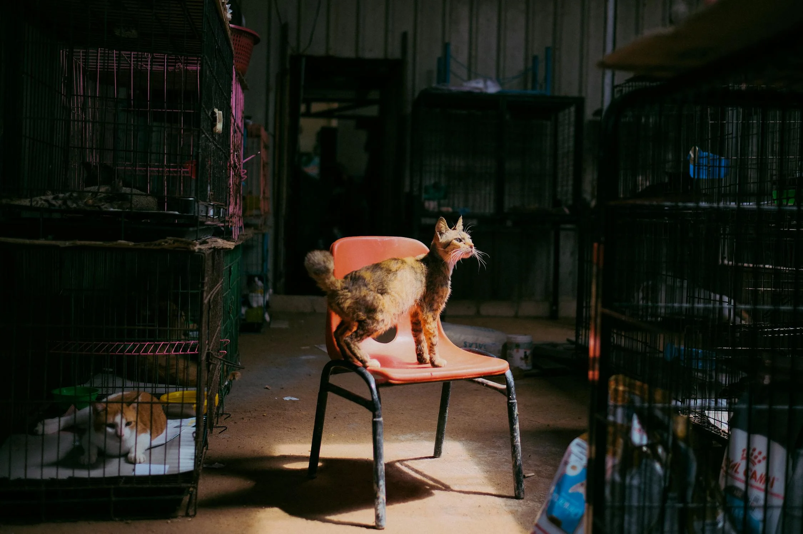
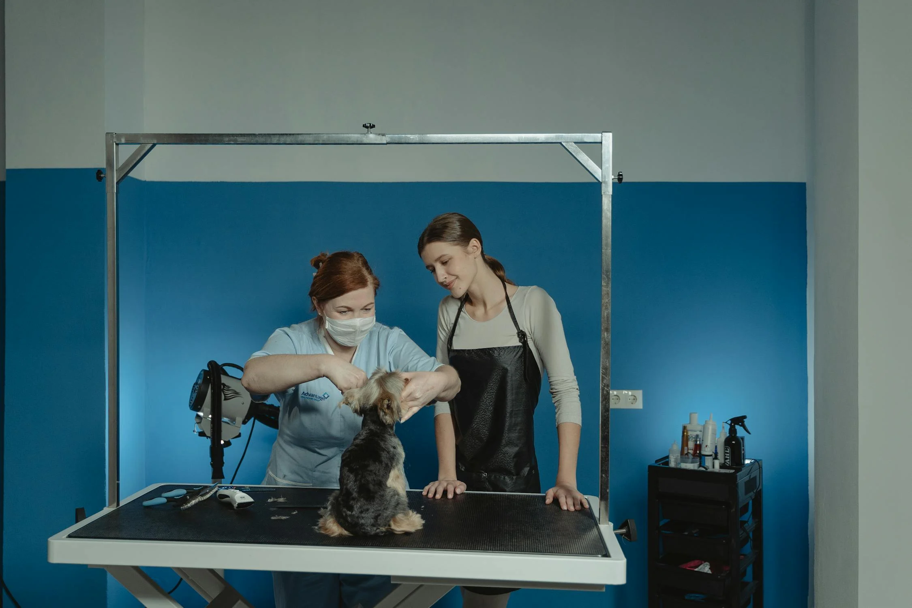
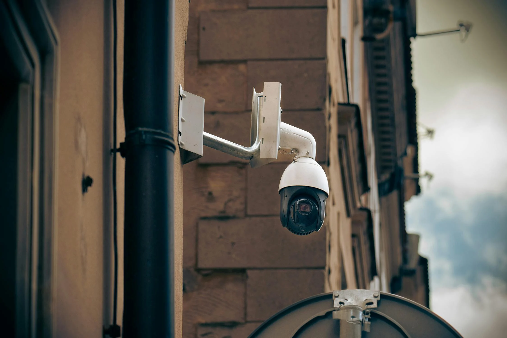

<!DOCTYPE html>
<html lang="fr">
    <head>
        <meta charset="UTF-8">
        <meta name="viewport" content="width=device-width, initial-scale=1, maximum-scale=1">
        <link rel="stylesheet" href="styles.css">
        <title>Animalerie</title>
        <meta name="description" content="Valeriia Mitrofanova Étudiante campus Carlone.">
        <script type="application/ld+json">
        {
            "@context": "https://schema.org",
            "@type": "Service",
            "name": "Animalerie",
            "description": "Service de jardinage professionnel efectuant différents services aux choix",
            "provider": {
                "@type": "Gardener",
                "name": "Lucas Jardins Entreprise",
                "url": "https://celiamelinard972.github.io/jardinage/",
                "logo": {
                    "@type": "ImageObject",
                    "url": "https://celiamelinard972.github.io/jardinage/images/logo.png",
                    "width": 300,
                    "height": 200
                },
                "address":{
                    "@type": "PostalAddress",
                    "streetAddress": "102 Chemin du Génie",
                    "psotalCode": "06000",
                    "addressLocality": "Nice",
                    "addressRegion": "PACA",
                    "addressCountry": "FR"
                }
            }
        }
        </script>
    </head>
    <body>
        <!-- Contenu de l'animalerie ici -->
    </body>
</html>
	    <script type="application/ld+json">
{
    "@context":"https://schema.org",
    "@type":"Breadcrumblist",
    "itemListElement":[
        {
            "@type":"ListItem",
            "position": 1,
            "name":"Accueil",
            "item":"https://celiamelinard972.github.io/jardinage/Accueil"//URL de la page internet//
        },
        {
            "@type":"ListItem",
            "position": 2,
            "name":"Services",
            "item":"https://celiamelinard972.github.io/jardinage/services.html"//URL de la page internet//
        },
        {
            "@type":"ListItem",
            "position": 3,
            "name":"Paysager",
            "item":"https://celiamelinard972.github.io/jardinage/services.html/paysager.html"//URL de la page internet//
        }
    ]
}
</script>

        
        <!-- Open Graph pour FB, IG, Linked et autres RS-->
         <meta property="og:title" content="Valeriia Mitrofanova, étudiante campus Carlone">
         <meta property="og:description" content="Valeriia Mitrofanova est Responsable des relations publiques.">
         <meta property="og:url" content="https://valeriia-mitrofanova-carlone.fr/etudiante-en-communication.html">
         <meta property="og:type" content="profile">
         <meta property="profile:first_name" content="Valeriia">
         <meta property="profile:last_name" content="Mitrofanova">
         <meta property="profile:username" content="étudiante">
         <meta property="profile:gender" content="female">

        <!--Twitter cards-->
        <meta name="twitter:title" content="Valeriia Mitrofanova, étudiante campus Carlone">
        <meta name="twitter:description" content="Valeriia Mitrofanova est une étudiante campus Carlone.">
        <meta name="twitter:creator" content="@llittleraa">
        <meta name="twitter:site" content="@etudiante_campus Carlone">
    </head>
    <body>
        <nav class="navbar">
            <div class="logo">Lerka Jardin</div>
            <ul class="nav-links">
                <li><a href="index.html">Maison</a></li>
                <li><a href="potager.html">Potager</a></li>
                <li><a href="animalerie.html">Animalerie</a></li>
                <li><a href="Création & Entretien.html">Création & Entretien</a></li>
                <li><a href="Zhiying Arossage.html">Arrosage</a></li>
                <li><a href="Zhiying Elagage.html">Elagage</a></li>
                <li><a href="../html manaev/lerkapropos.html">À propos</a></li>
            </ul>
        </nav>
        <br><br><br><br>><br><br>
        <div id="top">
            <div class="container">
                <h1 class="nos">Nos Services</h1>
                <!-- <p class="animalerie-text">Avec plus de 10 ans d’expérience, nous vous aidons à créer et entretenir votre potager de manière simple et efficace.</p>
            
            <div class="service">
                <h2>Planification de l’espace</h2>
                <p>Nous vous accompagnons dans l’organisation optimale de votre potager, en fonction de vos besoins et de votre environnement.</p>
            </div>
            
            <div class="service">
                <h2>Sélection des équipements</h2>
                <p>Choisissez avec nous les outils et solutions les plus adaptés pour garantir une culture efficace et durable.</p>
            </div>
            
            <div class="service">
                <h2>Installation et optimisation</h2>
                <p>Nous installons et optimisons votre potager pour une production abondante, tout en respectant la nature.</p> -->
            </div>
        </div>
        <br>
        <div class="big-text">
            <p>
                De l’aménagement de l’espace à la sélection des accessoires 
                et équipements adaptés, jusqu’à leur installation et leur optimisation,
                 nous nous occupons de tout pour vous ! Nous vous accompagnons à chaque
                  étape afin de garantir le bien-être des animaux et de créer un environnement harmonieux,
                   en vous proposant des solutions sur mesure et innovantes.
            </p>

        </div>
        <br>
        <div class="containersoil">
            <h1>Création d’espaces de vie adaptés</h1>
            <div>
                
            </div>
            <div>
                <p class="animalerie-text">
                    Conception et installation d’enclos, cages, aquariums et habitats sur mesure pour le bien-être des animaux.
                </p>
            </div>
        </div>
        <br>
        <div class="containerwb">
            <h1>Installation de systèmes d’alimentation et d’hydratation automatisés</h1>
            <div>
                
            </div>
            <div>
                <p class="animalerie-text">
                    Solutions pratiques et innovantes pour assurer une gestion optimale et un confort maximal aux animaux.
                </p>
            </div>
        </div>
        <br>
        <div class="containersoil">
            <h1>Vente et installation d’accessoires spécialisés</h1>
            <div>
                
            </div>
            <div>
                <p class="animalerie-text">
                    Nous proposons une gamme complète d’accessoires pour vos animaux : 
                    colliers, laisses, gamelles, couchages, jouets, ainsi que des solutions
                     de transport, d’entretien, de chauffage et de filtration adaptées à chaque espèce.
                </p>
            </div>
        </div>
        <br>
        <div class="containerwb">
            <h1>Conseil en soins et bien-être animal</h1>
            <div>
                
            </div>
            <div>
                <p class="animalerie-text">
                    Accompagnement personnalisé pour améliorer l’alimentation, l’hygiène et les conditions de vie des animaux.
                </p>
            </div>
        </div>
        <br>
        <div class="containersoil">
            <h1>Mise en place d’équipements de surveillance et de sécurité</h1>
            <div>
                
            </div>
            <div>
                <p class="animalerie-text">
                    Caméras, capteurs de température et autres outils pour garantir un environnement sécurisé.
                </p>
            </div>
        </div>

        <br>

        <a href="#top" class="scroll-to-top">▲ haut ▲</a>
        

        <footer class="footer">
            <p><strong>Horaires</strong></p>
            <p>Lundi - Vendredi: 9h - 18h</p>
            <p>Samedi: 10h - 16h</p>
            <p>Dimanche: Fermé</p>
            <p>&copy; 2025 Lerka Jardin. Tous droits réservés.</p>
        </footer>

    
    </body>
</html>
